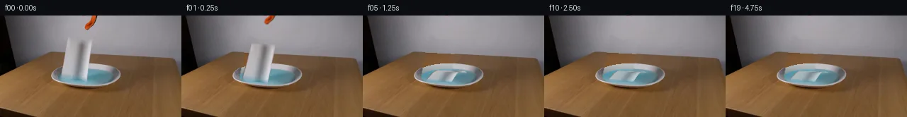

![首帧]()

Round 00
2026-11-05T14:02:36.101710+00:00像素候选变化代码 +240/−0inspection 更新
pixels 05b6f9279adfbb46 · code 92a2e4ccf2d898a5
查看本轮 generate.py 真实 diff
--- previous/generate.py
+++ current/generate.py
@@ -0,0 +1,240 @@
+from pathlib import Path
+import numpy as np
+from PIL import Image, ImageDraw
+from scipy.ndimage import map_coordinates, gaussian_filter
+from scipy.interpolate import PchipInterpolator
+import cv2
+from artifact_io import save
+
+ROOT = Path(__file__).resolve().parent
+S = 3
+W, H = 256, 144
+src = np.array(Image.open(ROOT/'first_frame.png').convert('RGB'))
+f = src.astype(np.float64)
+yy, xx = np.mgrid[:H,:W]
+rng = np.random.default_rng(129)
+
+# Measured source strip: v increases from the lower edge to the upper edge.
+def source_xy(u, v):
+ left = 84.0 + 11.5*v
+ right = 120.8 + 10.0*v
+ x = left*(1-u)+right*u
+ bottom = 88.8 + 4.7*u - .5*np.sin(np.pi*u)
+ top = 30.0 + 2*u + 6.2*np.sin(np.pi*u)
+ y = bottom*(1-v)+top*v
+ return x,y
+
+poly = []
+for u in np.linspace(0,1,25): poly.append(source_xy(u,1))
+for v in np.linspace(1,0,35): poly.append(source_xy(1,v))
+for u in np.linspace(1,0,25): poly.append(source_xy(u,0))
+for v in np.linspace(0,1,35): poly.append(source_xy(0,v))
+mask_im=Image.new('L',(W,H)); ImageDraw.Draw(mask_im).polygon(poly,fill=255)
+cloth_mask=cv2.dilate(np.array(mask_im),np.ones((5,5),np.uint8))
+tool_mask=np.zeros((H,W),np.uint8)
+# Include orange jaw, dark outline, and its anti-aliased border.
+cv2.fillPoly(tool_mask,[np.array([[125,0],[140,0],[138,9],[133,16],[125,22],[116,21],[116,12],[123,8]])],255)
+remove=np.maximum(cloth_mask,tool_mask)
+bg=cv2.inpaint(src,remove,5,cv2.INPAINT_NS).astype(float)
+
+# Reconstruct the locally occluded wall using its observed low-order illumination.
+wall_boundary=51.3+(xx-74)*.055
+wall_valid=(xx>60)&(xx<190)&(yy>4)&(yy<wall_boundary-2)&(remove==0)
+def polyfit_region(valid, degree=2):
+ x=(xx-120)/70; y=(yy-60)/50
+ basis=np.stack([np.ones_like(x),x,y,x*x,x*y,y*y],axis=-1)
+ coefficients=np.linalg.lstsq(basis[valid],f[valid],rcond=None)[0]
+ return basis@coefficients
+wall=polyfit_region(wall_valid)
+wall_area=(cloth_mask>0)&(yy<wall_boundary)
+bg[wall_area]=wall[wall_area]
+# The small wood area behind the paper uses the neighboring tabletop color field.
+plate=((xx-121.3)/49)**2+((yy-84.8)/17.4)**2
+wood_valid=(xx>65)&(xx<190)&(yy>wall_boundary+2)&(yy<80)&(plate>1.08)&(remove==0)
+wood=polyfit_region(wood_valid)
+wood_area=(cloth_mask>0)&(yy>=wall_boundary)&(plate>1)
+# Sample faint wood texture from an unobscured region, removing its low frequency field.
+texture=gaussian_filter(f, .6)-gaussian_filter(f, 3)
+wood_texture=texture[np.clip(yy+50,0,143),np.clip(xx+45,0,255)]*.35
+bg[wood_area]=(wood+wood_texture)[wood_area]
+
+# Match the visible ceramic rim and blue liquid only beneath the removed sheet.
+water=((xx-121.2)/40.1)**2+((yy-87.2)/12.0)**2
+rim_valid=(plate<.98)&(water>1.06)&(remove==0)&(xx>73)&(xx<170)
+rim=polyfit_region(rim_valid)
+# Distinct softly lit back rim rather than a polynomial extrapolation across the lip.
+back=np.clip((84.0-yy)/15,0,1)
+rimcolor=np.stack([141+43*back,147+42*back,150+40*back],axis=-1)
+rimcolor-=np.maximum(0,((xx-122)/50)**2)[...,None]*12
+rim_area=(cloth_mask>0)&(plate<=1)&(water>=1)
+bg[rim_area]=rimcolor[rim_area]
+liquid_valid=(water<.92)&(remove==0)
+liquid=polyfit_region(liquid_valid)
+liquid_area=(cloth_mask>0)&(water<1)
+bg[liquid_area]=liquid[liquid_area]
+# Very small blending band ensures the repaired region meets source pixels smoothly.
+blend=np.clip(cv2.distanceTransform(remove,cv2.DIST_L2,5)/1.6,0,1)
+bg=f*(1-blend[...,None])+bg*blend[...,None]
+bg=np.clip(bg,0,255)
+Image.fromarray(bg.astype(np.uint8)).save(ROOT/'.tmp/background.png')
+
+# Tool matte uses only source pixels; the jaw opens left while retracting upwards.
+actual_tool=(tool_mask>0)&(((f[...,0]>f[...,1]*1.18)&(f[...,0]>f[...,2]*1.5))|((xx>130)&(yy<11)&(f.mean(-1)<100)))
+actual_tool=cv2.dilate(actual_tool.astype(np.uint8),np.ones((3,3),np.uint8))
+alpha_tool=gaussian_filter(actual_tool.astype(float),.45)
+alpha_tool*=tool_mask>0
+
+# Controls describe the centerline of the flexible sheet. Its bottom is arrested
… diff truncated; 153 more lines …